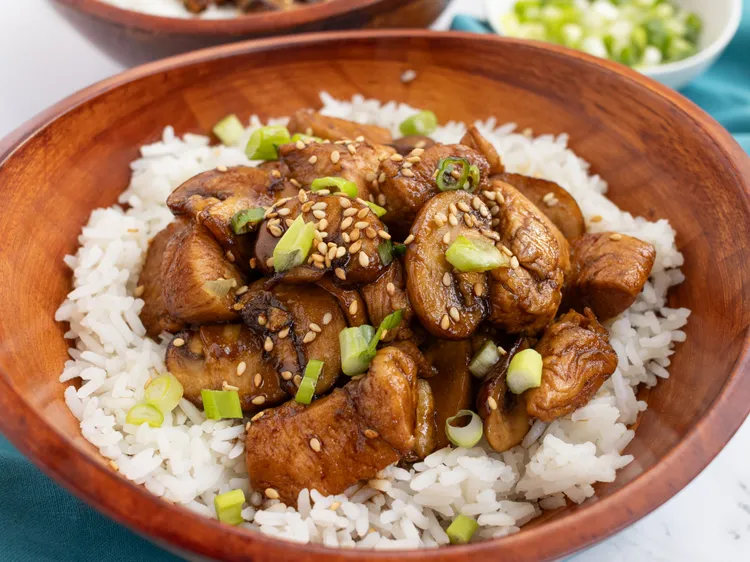

Este salteado de pollo y champiñones con salsa de soja dulce y vinagre balsámico lleva
ingredientes sencillos, se prepara rápidamente y es delicioso. Sírvelo en cuencos sobre
arroz blanco, decorado con cebolleta picada y semillas de sésamo tostadas.
Para la salsa, coloque una olla de fondo grueso a fuego medio. Añada el azúcar,
el vinagre balsámico, la salsa de soja, la pimienta blanca, el jengibre y el cilantro
y deje hervir a fuego lento, revolviendo con frecuencia, durante unos 5 minutos.
Mientras tanto, coloca una sartén a fuego medio. Agrega aceite a la sartén.
Sazona el pollo ligeramente con sal por ambos lados. Corta la pechuga de pollo
en trozos pequeños. Agrega el pollo y cocina, revolviendo, hasta que
esté ligeramente rosado en el centro, aproximadamente 5 minutos. Agrega los
champiñones y continúa cocinando, revolviendo con frecuencia, hasta que el
pollo ya no esté rosado en el centro y los champiñones estén blandos, unos
minutos más.
Añade el pollo y los champiñones a la salsa. Remueve para que se impregnen
bien; cocina hasta que se calienten por completo, aproximadamente 1 minuto.
Sirve sobre arroz blanco. Decora con cebolletas y semillas de sésamo.